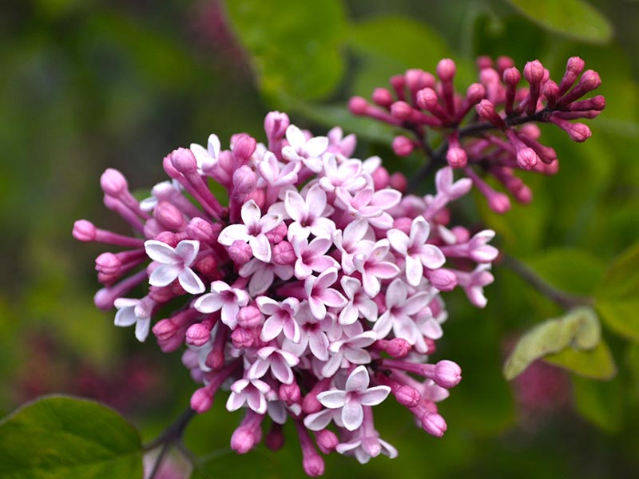
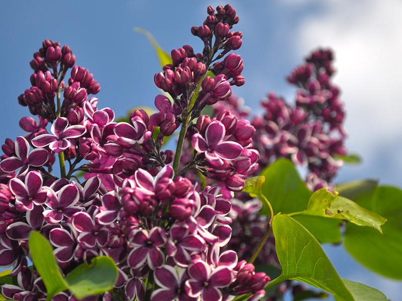
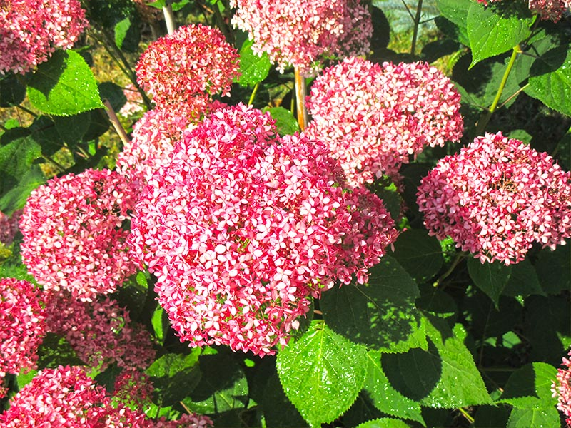
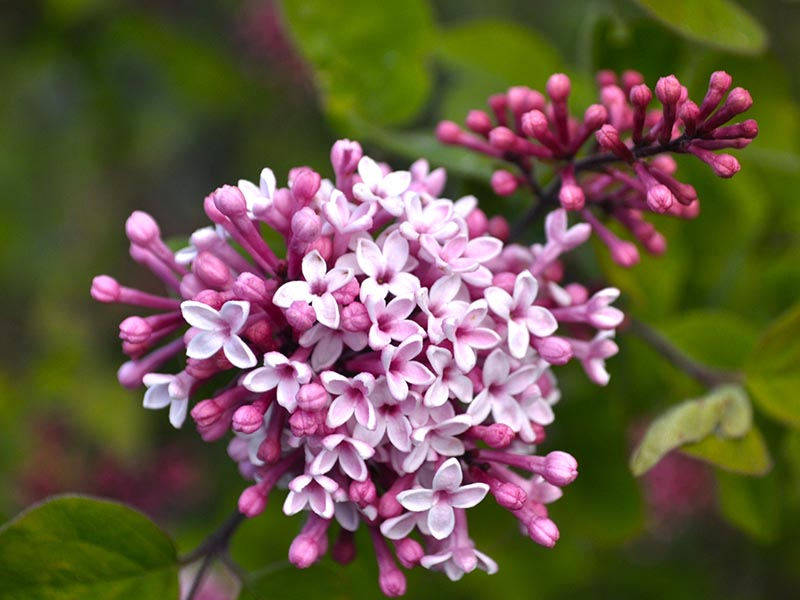
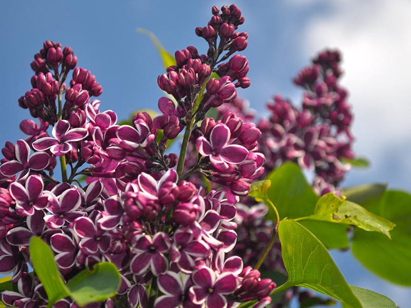
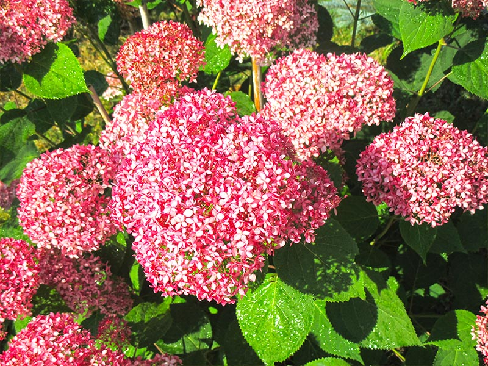
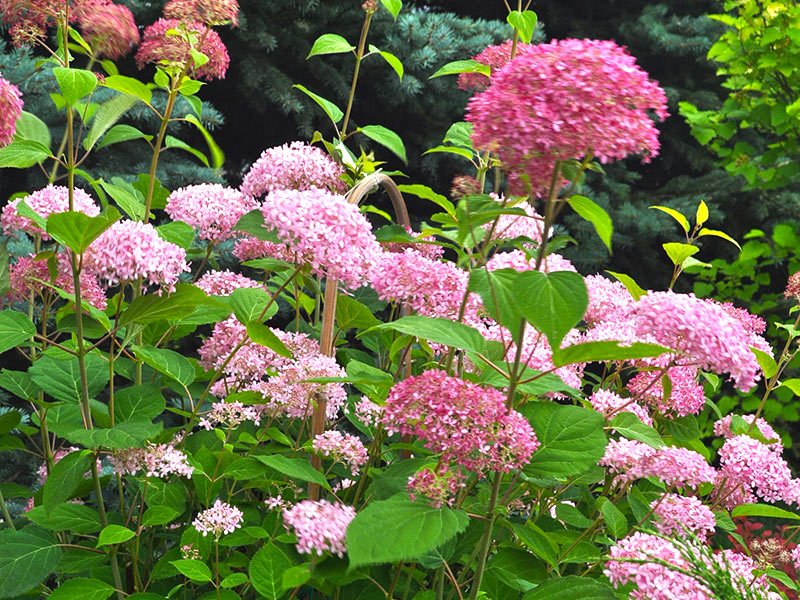
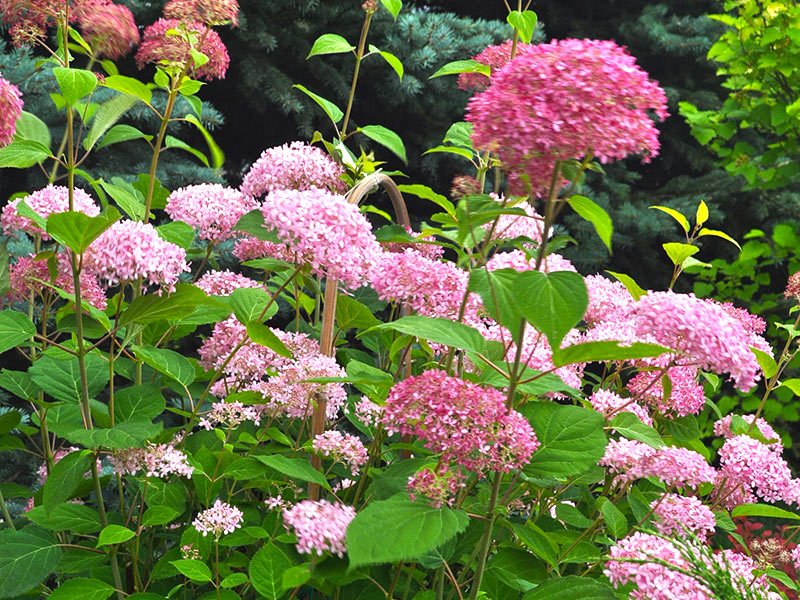

Krzewy liściaste to rośliny o zdrewniałych pędach wyrastające po kilka z jednego miejsca. Stanowią zróżnicowaną grupę, istnieje duże urozmaicenie form pokrojowych, kształtu i koloru liści, ozdobnych kwiatów, owoców i pędów. Niektóre z nich gubią liście inne zostają zimozielone. Dzięki naszym krzewom ozdobnym Twój ogród nabierze kolorów. Niektóre z nich to krzewy zimozielone, inne to efektowne krzewy kwitnące. Żaden ogród nie obejdzie się bez liściastych krzewów ozdobnych.
Naszą specjalnością są róże:
Parkowe
Rabatowe
Pnące
Wielkokwiatowe
Pozostałe gatunki krzewów:
Azalia
Berberys
Budleja
Bukszpan
Dereń Biały
Jaśminowiec
Pigwowiec
Krzewuszka
Irga
Trzmielina
Forsycja
Hortencja
Lawenda
Magnolia
Perowskia
Pięciornik
Pęchorznica Kalinolistna
Tawuła Szara
Tawuła Japońska
Lilak Drobnolistny
Lilak Pospolity
Kalina Wonna
Kalina Koreańska
Kalina Koralowa

 







 
